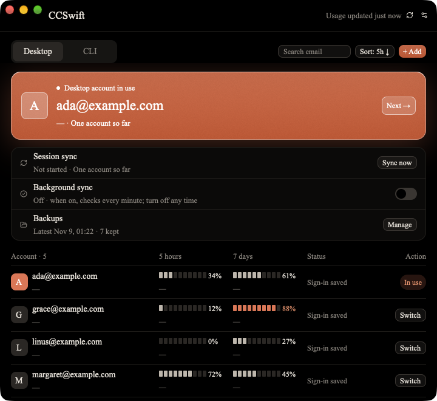
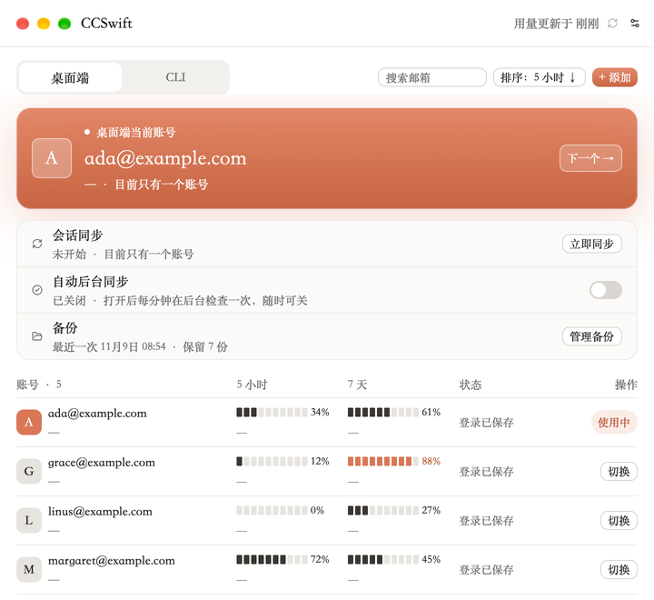
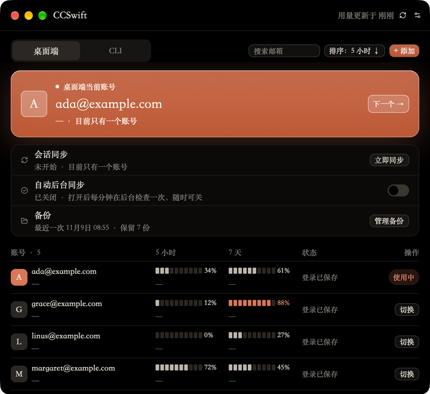

桌面端切换Desktop switching
一键切到另一个账号，Claude 重启后直接登录好，本地会话在每个账号里都一样。One click and Claude restarts signed in to the other account, with the same local sessions in every account.
CCSwift 分别切换 Claude 桌面端和 Claude Code（CLI）的账号，桌面端的会话在账号之间保持一致，每个账号的 5 小时和 7 天用量放在同一张表里。CCSwift switches the Claude Desktop account and the Claude Code (CLI) account separately, keeps your Desktop sessions the same across accounts, and shows every account's 5-hour and 7-day usage in one table.
Apple 芯片 · macOS 11 及以上Apple silicon · macOS 11 or later



桌面端和 CLI 各有一个标签，互不影响。Desktop and CLI each have their own tab, and neither touches the other.
一键切到另一个账号，Claude 重启后直接登录好，本地会话在每个账号里都一样。One click and Claude restarts signed in to the other account, with the same local sessions in every account.
换 claude 命令用的账号，不碰桌面端。在应用里添加账号、重新登录，不用另装工具。Change the account the claude command uses without touching Desktop. Add accounts and sign in again from the app, no extra tool needed.
每个账号的 5 小时和 7 天用量、重置时间和登录状态，超过 80% 会用橙色提醒。Each account's 5-hour and 7-day usage, reset times and sign-in status, with anything over 80% marked in orange.
随时点“立即同步”。后台自动同步默认关闭，由你决定开不开。Press Sync now whenever you like. Background sync is off until you turn it on.
同步要改动会话时先自动备份（最多每小时一份），也能手动备份、一键恢复。备份只存在你的 Mac 上。A sync that changes your sessions backs them up first (at most once an hour); you can also back up by hand and restore in one click. Backups stay on your Mac.
不用开窗口，菜单栏里就能切换两边的账号。首次打开有引导，之后可随时回放。Switch either side from the menu bar without opening the window. A short tour on first launch, replayable any time.
claude auth login从 Releases 下载 CCSwift-版本号-macos-arm64.dmg，把 CCSwift 拖进“应用程序”。Download CCSwift-<version>-macos-arm64.dmg from Releases and drag CCSwift to Applications.
目前是自签名版本，没有经过 Apple 公证。第一次打开如果被拦，到“系统设置 → 隐私与安全性”点“仍要打开”。The build is self-signed and not notarized by Apple. If macOS blocks the first launch, use System Settings → Privacy & Security → Open Anyway.